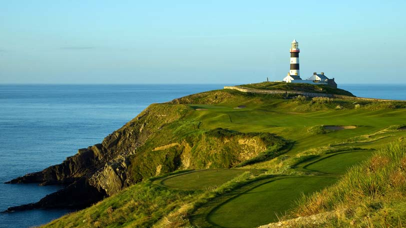
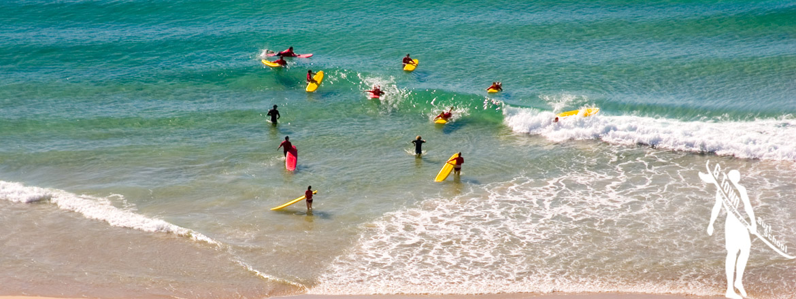
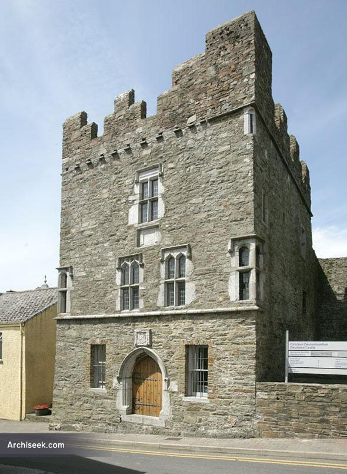
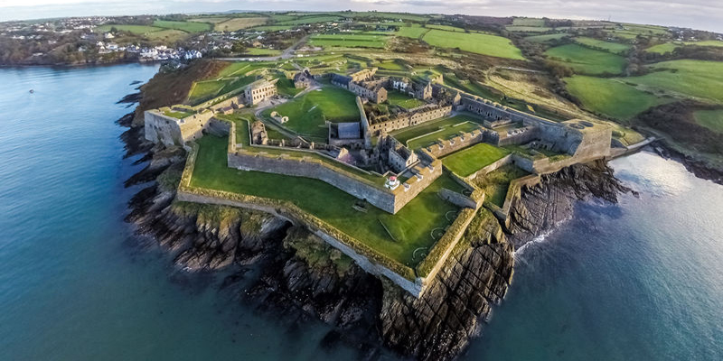

|  |  |
| Old Head of Kinsale Location: County Cork, Ireland. Height: 30 m | Kite surfing Address: Kinsale |
|  |  |
| Desmond Castle Address: Cork St, Sleveen, Kinsale, Co. Cork. (021) 477 4855 | Charles Fort Address: Summer Cove, Kinsale, Co. Cork. (021) 477 2263 |